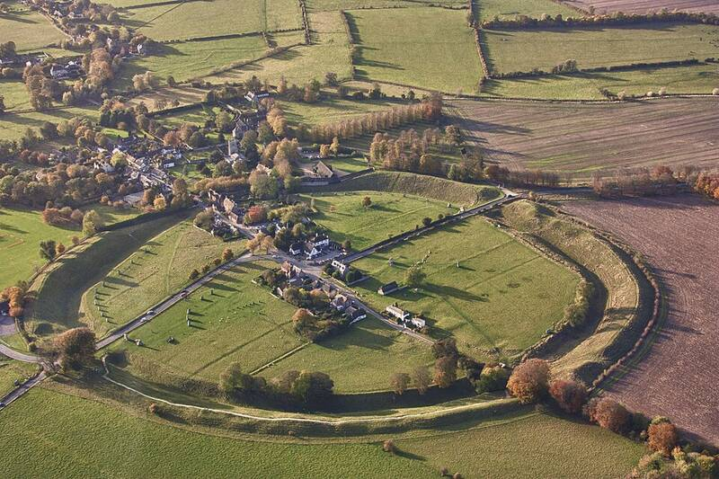

Avebury
Wiltshire, England

A Neolithic henge with the largest megalithic stone circle in the world, built over several hundred years in the third millennium BC; its original purpose is unknown. It is linked in popular belief with ley lines and with crop circles: nearly half of all UK crop circles found in 2003 lay within 15 km of the Avebury stones. Some believers say the circles are made by extraterrestrials, but all crop circles are consistent with human causation. 1,2
Open in the interactive Watcher
Sources
- Avebury Wikipedia
- Crop circle Wikipedia